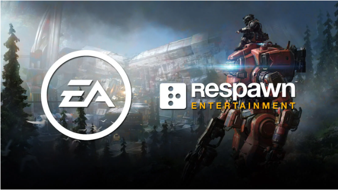
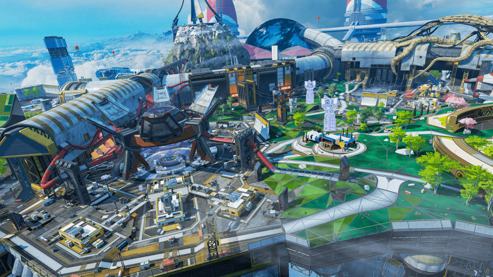

About

ประวัติความเป็นมาของเกม Apex
อิเล็คโทรนิค อาร์ตส (Electronic Arts) บริษัทวิดีโอเกม
เริ่มแรกนั้นบริษัทผู้พัฒนาเกมอย่าง Respawn
ทำหน้าที่รับผิดชอบดูแลในส่วนของโปรเจกต์เกมอย่าง Titan Fall ทั้ง 2 ภาค
ถึงแม้จะมีกลุ่มผู้เล่นที่แข็งแกร่งและชื่นชอบเกม
แต่มันก็ไม่เพียงพอต่อยอดขายที่ออกมาซึ่งไม่เป็นที่พอใจนักสำหรับทางค่ายต้นสังกัดออย่าง EA
และในขณะที่พวกเขากำลังพัฒนาทำ Titanfall 3 อยู่นั้นเป็นช่วงเวลาเดียวกับที่กระแสเกม Battle
Royale กำลังมาแรงเป็นอย่างมากทั้ง PUBG และ Fortnite ก็โด่งดังสุด ๆ
พวกเขาเลยได้รับมอบหมายให้ทำการสร้างเกม Battle Royale ขึ้นมาหรือไม่ก็เป็นโหมดใน Titanfall
ซะโดยจะเป็นโปรเจกต์อย่างลับ ๆ
ในครั้งแรกนั้นพวกเขาตั้งใจให้มีหุ่นรบอยู่ในเกมด้วยแต่เนื่องจากความที่ดูไม่สมดุลเท่าไหร่นักเลยตัดสินใจนำมันออกไป
แล้วกลายเป็นเกมที่อยู่เพียงแค่ในจักรวาลเดียวกันกับ Titanfall เท่านั้น
รูปแบบการเล่น (Gameplay)

เกม Apex Legends
นั้นถูกทดสอบมาหลากหลายรูปแบบเป็นอย่างมากจนในที่สุดพวกเขาก็ได้ข้อพิสูจน์แล้วว่าการเล่นแบบ
3 คนต่อหนึ่งทีมเป็นการเล่นที่ดีที่สุด โดยจะมีตัวให้เลือกทั้งหมด 8 ตัว (มีอีก
3ตัวเพิ่มเข้ามา) ในตอนนี้
ซึ่งคาดเดากันว่าจะมีเพิ่มเติมมากขึ้นอีกในอนาคตข้างหน้า สำหรับแต่และตัวละคร (Legends)
นั้นจะมีสกิลทั้งหมด 3 สกิลด้วยกันซึ่งจะต่างกันไปในแต่ละตัว
แผนที่ภายในเกม
World'Edge
ความเป็นมาของแผนที่...
เป็นดาวเคราะห์ที่รุนแรงรุมเร้าด้วยการระเบิดของภูเขาไฟที่รุนแรง
ทาลอสเคยถูกมองว่าไม่เอื้ออำนวย
และมีเพียงการตั้งถิ่นฐานเล็ก ๆ น้อย ๆ ที่หยั่งรากอยู่ที่นั่น อย่างไรก็ตาม
มันกลายเป็นแหล่งเพาะของกิจกรรม IMC เมื่อมีการค้นพบสารประกอบแร่หายากใต้พื้นผิวของมัน
หอคอยลดความร้อนถูกสร้างขึ้นเพื่อให้กระแสลาวาธรรมชาติเย็นลงเป็นพิเศษเพื่อให้สามารถดึงทรัพยากรได้
สิ่งอำนวยความสะดวกที่ตั้งอยู่นั้นได้รับการขนานนามว่ามองโลกในแง่ดี
“New Dawn” และเมือง World's Edge ก็เติบโตขึ้นรอบๆ
ทศวรรษที่ผ่านมา
การระเบิดในหอคอยแห่งใดแห่งหนึ่งได้ปกคลุมบริเวณโดยรอบด้วยความเยือกแข็งที่ร้ายแรง โลก
Edge ถูกทิ้งร้าง เหลือเพียงชุมชนเล็กๆ ของนักล่าที่ครั้งหนึ่งเคยปฏิเสธเทคโนโลยีสมัยใหม่
(แต่ก็ยอมรับอย่างไม่แน่นอนอีกครั้งภายใต้การแนะนำของฮีโร่ในพื้นที่อันเป็นที่รักของพวกเขา
บลัดฮาวด์) อย่างไรก็ตามซากปรักหักพังและโลกของ
ดินที่อุดมด้วยพลังงานได้รับความสนใจจากกลุ่มสำคัญสองกลุ่ม ได้แก่ กลุ่มทหารรับจ้างและ
Hammond Robotics หลังจาก Repulsor โจมตี King's Canyon และต่างๆ
ความพยายามที่จะสร้างใหม่ได้พิสูจน์ให้เห็นถึงปัญหามากกว่าที่ควรจะเป็น World's Edge
กลายเป็นบ้านหลังที่สองของ Apex Games และเป็นศูนย์กลางการดำเนินงานที่สำคัญสำหรับ Hammond
Robotics
kings canyon
ความเป็นมาของแผนที่...
เกาะร้างของเขาไม่ได้ถูกทิ้งร้างเสมอไป ส่วนหนึ่งของหมู่เกาะ Antillia ใหม่
เกาะที่สวยงามแห่งนี้เต็มไปด้วยทรัพยากรที่อุดมสมบูรณ์เป็นหนึ่งในสถานที่แรกที่การเดินทางของ
IMC ในช่วงต้นทำให้เกิดแผ่นดินบนโลก Gaea
อย่างไรก็ตามพื้นที่ถูกแยกออกและล้อมรอบด้วยพายุเขตร้อน
การตั้งถิ่นฐานถาวรก่อตั้งขึ้นบนชายฝั่งใกล้เคียง-วันนี้เป็นที่รู้จักกันในชื่อเมือง
Suotamo-และมีการสร้างพายุที่สร้างพลังงานขึ้นมาบนพายุ
เพื่อตอบสนองความต้องการพลังงานของเมืองที่กำลังเติบโต
เมื่อ IMC ดึงออกมาจาก Outlands ผู้เข้าชมพายุก็ตกอยู่ในสภาพทรุดโทรม
ในที่สุดก็หยุดทำงานในที่สุด - แต่ไม่ใช่ของตัวเอง
มันถูกดึงลงมาและการขาดงานของมันทำให้พายุที่ล้อมรอบเกาะ
การสำรวจพื้นที่เปิดเผยซากของการตั้งถิ่นฐานที่ไม่ซ้ำกันหลายแห่งที่สร้างขึ้นในช่วงหลายศตวรรษ
แต่ไม่มีผู้รอดชีวิต การตั้งถิ่นฐานอย่างหนึ่งถูกสร้างขึ้นประมาณ 2716 หลังจาก IMS
Hestia-01 เรือ IMC ที่ชนกันทางใต้สุดของเกาะ
[2] ผู้คนใน Gaea
ละทิ้งเกาะเป็นเวลาหลายปีนอกเหนือจากกลุ่มคนเก็บขยะหรือกลุ่มโจรสลัดเป็นครั้งคราวที่พยายามปล้นสิ่งที่ถูกทิ้งไว้ข้างหลัง
จนกระทั่งแน่นอนว่ามันดึงดูดสายตาของ Mercenary Syndicate
ซึ่งเห็นว่ามันเป็นสถานที่ที่สมบูรณ์แบบสำหรับเกม Apex
olympus
ความเป็นมาของแผนที่...
เโอลิมปัสเป็นเมืองที่สร้างขึ้นจากความฝัน สร้างขึ้นใน 2640 โดยผู้มีมนุษยธรรม Lillian Peck
[1] ยูโทเปียนี้ลอยอยู่ในเมฆเหนือ Psamathe
ครั้งหนึ่งเคยเป็นสถานที่ที่จิตใจที่สว่างที่สุดใน Outlands
สามารถรวบรวมและแลกเปลี่ยนความคิดเห็นซึ่งนำไปสู่ความก้าวหน้าในวิทยาศาสตร์และศิลปะ Olympus
ผลิตความก้าวหน้าจำนวนมากสำหรับ Outlands
รวมถึงการพัฒนาในการกระโดดที่เป็นมิตรกับสิ่งแวดล้อมสำหรับเรือระยะไกลเทคโนโลยีเฟสสำหรับการขนส่งทันทีที่เรียกว่า
The Phase Runner และเทคโนโลยี Drone สำหรับสุขภาพและระบบรักษาความปลอดภัย [1]
ทศวรรษที่ผ่านมา
การระเบิดในหอคอยแห่งใดแห่งหนึ่งได้ปกคลุมบริเวณโดยรอบด้วยความเยือกแข็งที่ร้ายแรง โลก
Edge ถูกทิ้งร้าง เหลือเพียงชุมชนเล็กๆ ของนักล่าที่ครั้งหนึ่งเคยปฏิเสธเทคโนโลยีสมัยใหม่
(แต่ก็ยอมรับอย่างไม่แน่นอนอีกครั้งภายใต้การแนะนำของฮีโร่ในพื้นที่อันเป็นที่รักของพวกเขา
บลัดฮาวด์) อย่างไรก็ตามซากปรักหักพังและโลกของ
ดินที่อุดมด้วยพลังงานได้รับความสนใจจากกลุ่มสำคัญสองกลุ่ม ได้แก่ กลุ่มทหารรับจ้างและ
Hammond Robotics หลังจาก Repulsor โจมตี King's Canyon และต่างๆ
ความพยายามที่จะสร้างใหม่ได้พิสูจน์ให้เห็นถึงปัญหามากกว่าที่ควรจะเป็น World's Edge
กลายเป็นบ้านหลังที่สองของ Apex Games และเป็นศูนย์กลางการดำเนินงานที่สำคัญสำหรับ Hammond
Robotics
อย่างไรก็ตามความฝันทั้งหมดสิ้นสุดลงและสิ่งนี้จบลงอย่างระเบิด:
อุบัติเหตุนักวิ่งระยะในสถานที่วิจัยเชิงทดลองนำไปสู่การสร้างความแตกแยกของเฟส
(ฟองพลังงานขนาดใหญ่) และที่ดีที่สุดและสว่างที่สุด เมือง.
นั้นได้รับการดูแลโดยระบบคอมพิวเตอร์ขั้นสูงดังนั้นจึงพบผู้ซื้อรายใหม่ในชนชั้นสูงของ
Outlands ได้อย่างรวดเร็ว เป็นเวลา 40
ปีที่ทำหน้าที่เป็นสถานที่พักผ่อนที่ฟุ่มเฟือยพร้อมความแตกแยกเป็นแหล่งท่องเที่ยว
น่าเสียดายที่รอยแยกเริ่มทำงานล่วงเวลาอย่างไม่แน่นอนและโอลิมปัสก็อพยพอย่างเต็มที่เมื่อหกเดือนที่แล้ว
ตอนนี้ Hammond Robotics ด้วยการสนับสนุนของ Mercenary Syndicate ได้เปลี่ยน Olympus
ให้กลายเป็นเวทีใหม่สำหรับเกม Apex
Footer